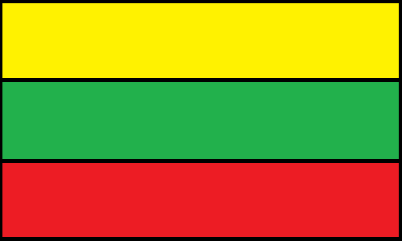
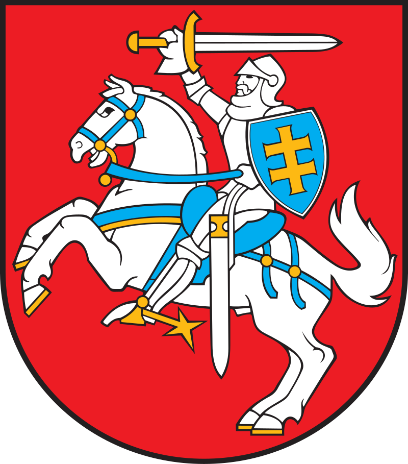

|


Lietuvos Respublikos herbas yra Vytis – raudoname lauke vaizduojamas sidabrinis šarvuotas raitelis, laikantis virš galvos iškeltą sidabrinį kalaviją su auksine rankena. Prie raitelio kairiojo peties – mėlynas skydas su dvigubu auksiniu kryžiumi. Žirgo kamanos, odiniai diržai, balnas ir trumpa gūnia – mėlyni. Pasagos, žąslai, pentinas, balno kilpa bei odinių diržų metaliniai sutvirtinimai (pagražinimai) – auksiniai. Beje, to meto Lietuvos valdovų ir diduomenės drabužiai stebino savo prabanga bei sekė Vakarų Europos madomis.